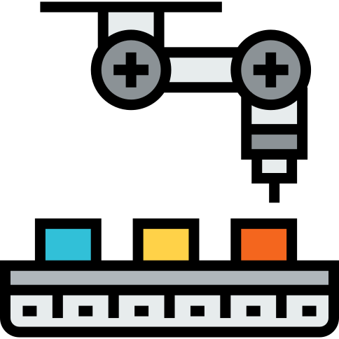

<div class="container mt-5 pt-5" style="min-height: 100vh;">
  <div class="w-100 h-100 d-flex justify-content-center align-items-center">
    <div class="row h-100">
      <div class="col-lg-6 order-lg-2">
        <div class="p-5">
          
        </div>
      </div>
      <div class="col-lg-6 order-lg-1">
        <div class="p-5">
          <h2 class="display-4">Manajemen Fitur itu Apa Sih?</h2>
          <p>Jadi, website ini adalah website untuk mengumpulkan data tentang fitur-fitur dalam <i>App Development</i>. Pengumpulan data menggunakan metode vote untuk mendapatkan data dari para pengguna. Pengguna dapat menambahkan fitur baru dan juga dapat memberikan vote.</p>
        </div>
      </div>
    </div>
  </div>
</div>
